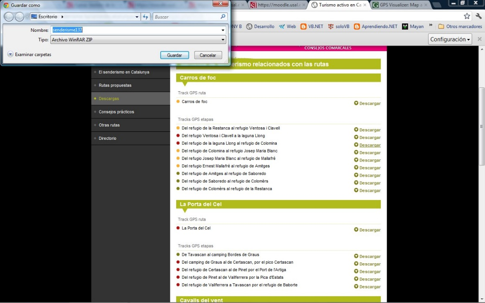
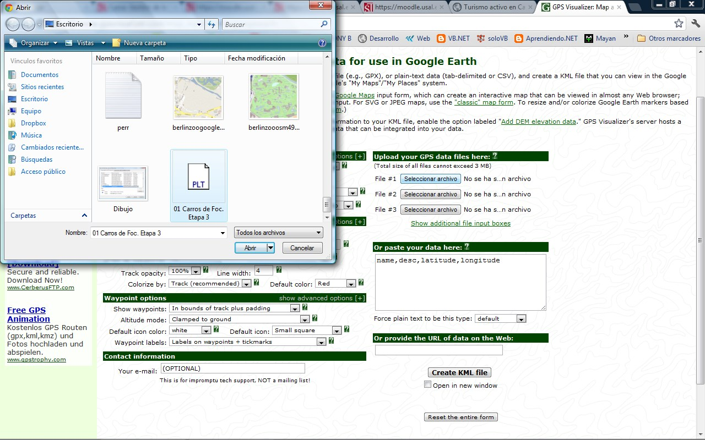
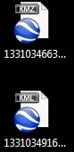
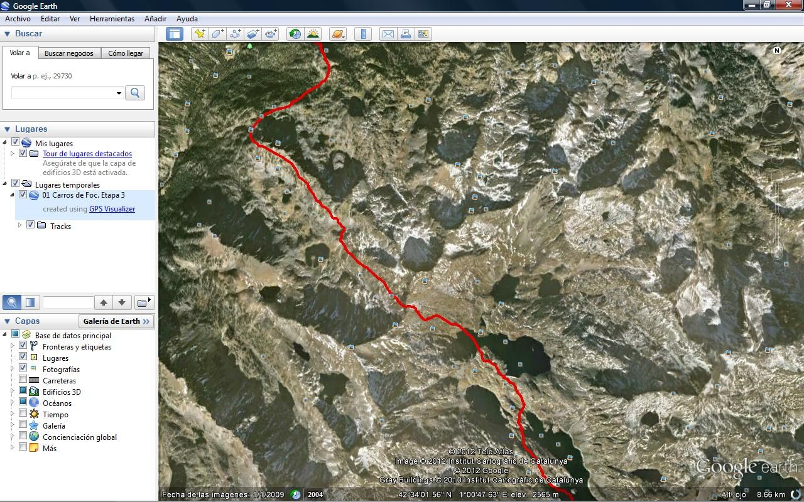
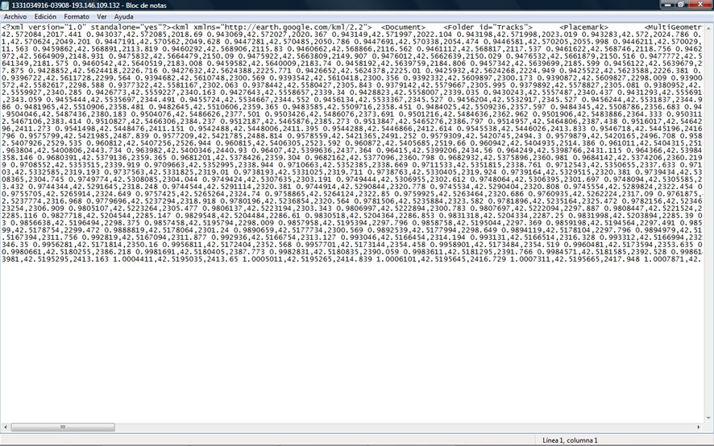
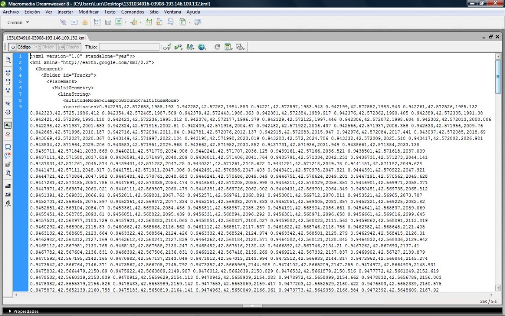
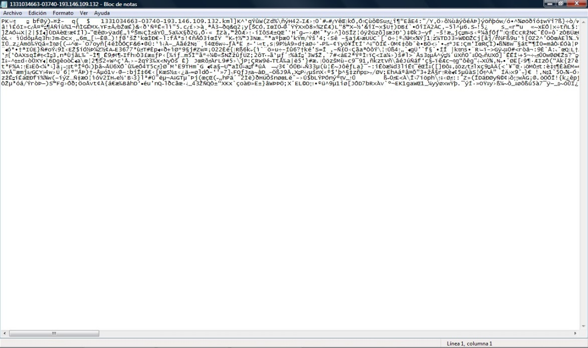
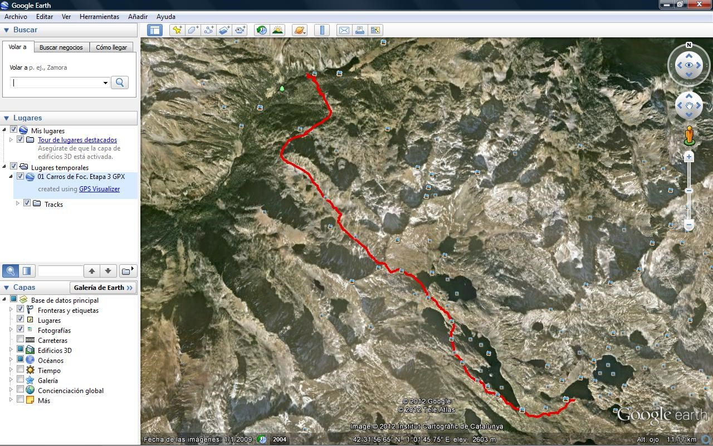
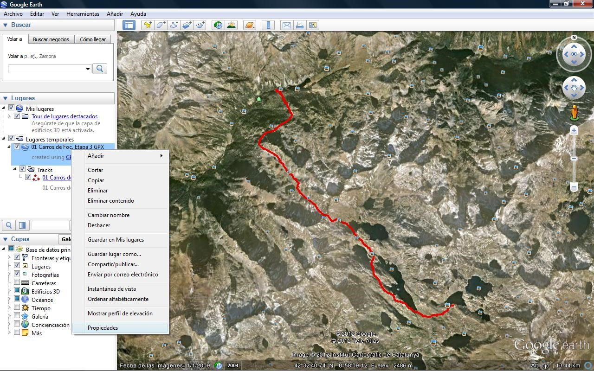
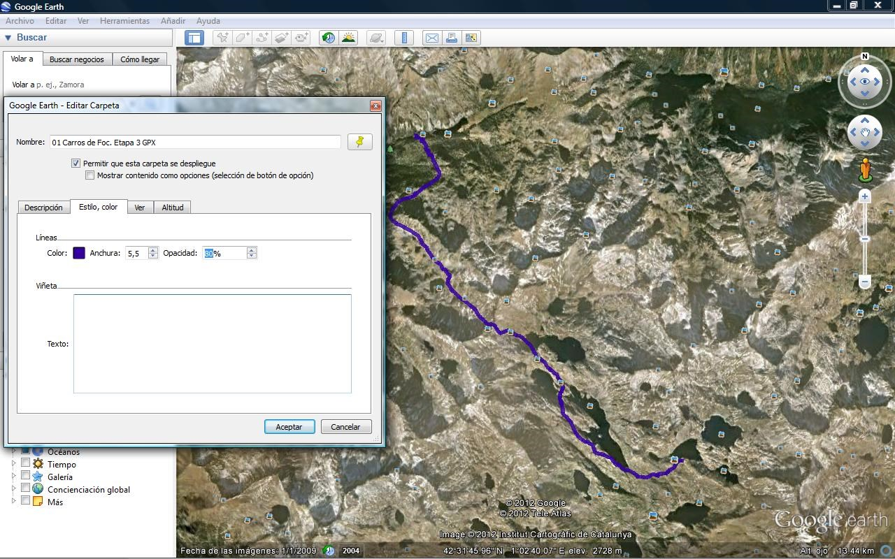

SUMARIO DE CONTENIDO
1. Vista y Comenta estos ejemplos de uso de KML
3. Edición KML. Edita alguno de los ficheros KML descargados anteriormente mediante Google Earth.
4. Reflexión crítica. En base a los ejercicios anteriores, realiza una revisión crítica
SUMARIO DE FIGURAS
Ilustración 1. Descarga de ruta.........7
Ilustración 2. Conversión de fichero.........8
Ilustración 3. Archivo KML y KMZ.........8
Ilustración 4. Ruta mostrada en Google Earth.........9
Ilustración 5. Archivo KML abierto con notepad.........9
Ilustración 6. Archivo KML con Dreamweaver.........10
Ilustración 7. Archivo KMZ abierto con notepad.........10
Ilustración 8. Archivo KML abierto con Google Earth.........11
Ilustración 9. Mostrar propiedades de la capa.........11
Ilustración 10. Modificando valores de capa con Google Earth.........12
KML es un lenguaje desarrollado a partir de XML, siendo este no un lenguaje particular, sino una manera (esquema, plantilla) para definir las diferentes necesidades de los lenguajes, siendo un ejemplo de este uso KML.
A continuación se muestra un fragmento de KML:
Vemos un ejemplo:
<?xml version="1.0" encoding="UTF-8"?>
<kml xmlns="http://www.opengis.net/kml/2.2">
<Document>
<name>KmlFile</name>
<Style id="transBluePoly">
<LineStyle>
<width>1.5</width>
</LineStyle>
<PolyStyle>
<color>7dff0000</color>
</PolyStyle>
</Style>
<Placemark>
<name>Absolute</name>
<visibility>1</visibility>
<styleUrl>#transBluePoly</styleUrl>
<Polygon>
<tessellate>1</tessellate>
<altitudeMode>absolute</altitudeMode>
<outerBoundaryIs>
<LinearRing>
<coordinates>
-112.3372510731295,36.14888505105317,1784
-112.3356128688403,36.14781540589019,1784
-112.3368169371048,36.14658677734382,1784
-112.3384408457543,36.14762778914076,1784
-112.3372510731295,36.14888505105317,1784
</coordinates>
</LinearRing>
</outerBoundaryIs>
</Polygon>
</Placemark>
</Document>
</kml>
Si se analiza por partes:
Todo está envuelto por etiquetas, siendo la etiqueta de apertura el símbolo “<>“ (sin las comillas) y el cierre </>.
Esta primera línea define la versión del lenguaje (xml 1.0) y el tipo de codificación (UTF-8). Esta etiqueta no tiene cierre.
<?xml version="1.0" encoding="UTF-8"?>
Entre estas etiquetas se sitúan el tipo de KML utilizado (versión, web).
<kml xmlns="http://www.opengis.net/kml/2.2">…</kml>
Apertura/cierre del documento.
<Document>…</Document>
Nombre del archivo.
<name>KmlFile</name>
Un apuntador o variable denominada transBluePoly a la que le asigna un estilo. Más tarde aparecerá esa variable y tendrá definido el estilo.
<Style id="transBluePoly">…</Style>
Define el estilo de la línea, con un ancho de 1.5 puntos.
<LineStyle>
<width>1.5</width>
</LineStyle>
Define el color que se utilizará para la línea en hexadecimal.
<PolyStyle>
<color>7dff0000</color>
</PolyStyle>
Es un elemento de marca de posición.
<Placemark>…</Placemark>
Se define un nombre.
<name>Absolute</name>
La visibilidad de la capa.
<visibility>1</visibility>
El estilo que se le va a dar, enlazando con la variable pasada por id.
<styleUrl>#transBluePoly</styleUrl>
Se define un polígono.
<Polygon>…</Polygon>
Descompone la línea en trozos pequeños.
<tessellate>1</tessellate>
Dentro se encuentran las coordenadas.
<coordinates>…</coordinates>
En la primera página web, se va visualizando determinada información de parcelas, edificios, etc. y se muestra cómo sería el archivo KML asociado a los mismos.
En el segundo enlace, hay una serie de ejemplo de archivos KML y se encuentra disponible toda la documentación para estudiar a fondo la forma y etiquetas que contiene el lenguaje.
Para más información en castellano, es posible visitar la siguiente URL, https://developers.google.com/kml/?hl=es, donde hay numerosos ejemplos y sus respectivas explicaciones.
Entrar en http://www.senderosdelsistemacentral.com/descargas_gps, seleccionar una ruta y descárgala en formato gpx. Usa el conversor online http://kml2gpx.com para convertirla a formato kml. Abre este formato kml en Google Maps o Google Earth.
Accediendo a la primera web, se muestra un gran número de rutas disponibles para descargar en formato GPX, KML, ECW, PDF. El siguiente paso ha sido seleccionar una ruta y descargarla.

Ilustración 1. Descarga de ruta.
Una vez descargado, el paso siguiente es acceder al segundo portal.

Ilustración 2. Conversión de fichero.
Se puede crear el archivo KML (sin comprimir) o el archivo KMZ (comprimido). Una vez realizado esto, se descarga.

Ilustración 3. Archivo KML y KMZ.
Con la aplicación Google Earth instalada en el ordenador se pueden visualizar la ruta, independientemente del formato descargado

Ilustración 4. Ruta mostrada en Google Earth.
Si el archivo KML se abre con el bloc de notas, se puede observar la estructura del mismo pero, obviamente, todo en la misma línea. Si se quiere observar con diferentes colores las etiquetas y sangrías, se puede recurrir a otro tipo de editores.

Ilustración 5. Archivo KML abierto con notepad.

Ilustración 6. Archivo KML con Dreamweaver.
Si se intenta abrir el archivo KMZ, al estar comprimido, no es legible.

Ilustración 7. Archivo KMZ abierto con notepad.
Una vez descargados los archivos, se ejecuta Google Earth y se abre el fichero.

Ilustración 8. Archivo KML abierto con Google Earth.
Tras seleccionar la capa, se pulsa con el botón derecho/propiedades.

Ilustración 9. Mostrar propiedades de la capa.
Dentro de Propiedades, se selecciona la pestaña estilo/color, y se modifica el color, la anchura de la línea y su opacidad.

Ilustración 10. Modificando valores de capa con Google Earth.
Abriendo el archivo KML modificado con un editor, se pueden apreciar varios cambios.
<LineStyle>
<color>FF0000E6</color>
<width>4</width>
</LineStyle>
<LineStyle>
<color>cc9f0035</color>
<width>5.5</width>
</LineStyle>
Se ha modificado el color y la anchura de la línea.
En el archivo KML de este ejemplo simplemente aparecen, además de las cabeceras propias del formato, un conjunto de coordenadas que definen los nodos de la ruta y su estilo, como es anchura o color.
Es un lenguaje de etiquetado muy sencillo, además de que su semántica es fácilmente entendible. De esta manera, basta con tener unos pocos conocimientos y conocer el significado de las etiquetas, para poder entenderlo de manera muy intuitiva.
Otro punto a favor es el conocimiento por parte de muchos usuarios de formatos similares, como es HTLM o XML (siendo este último, un plantilla sobre el que se desarrolla KML), de esta manera, todos los usuarios que hayan desarrollado otros proyectos como son, páginas web (HTML), aplicaciones para dispositivos móviles (XML), están habituados a realizar un esqueleto del proyecto con formatos muy similares o consumir APIs con este tipo de formatos.
Gracias a todo ello, se puede editar directamente el archivo con cualquier editor de texto, sin necesidad de recurrir a herramientas externas, además de poder automatizar de forma relativamente simple, la creación de archivos KML.
Es un formato demasiado pesado. Por ejemplo, para una ruta muy extensa, la cantidad de nodos sería muy amplia, aunque esto no debería ser un inconveniente mayor, puesto que existe el formato comprimido KMZ que reduce sustancialmente el tamaño del archivo, aunque ya sería necesaria una herramienta externa para descomprimir el archivo si se quiere editar directamente en un editor de texto.
Sin embargo, a pesar de que pueda parecer relativamente bajo el volumen del archivo, muchas aplicaciones para dispositivos móviles (smartphones, tablets, etc.) que habitualmente se usan en redes móviles donde la velocidad de conexión puede estar limitada, requieren que el tamaño del archivo sea muy reducido.
Sí.
Entre otras.
64.
Seleccionando una entidad nacional española, las tarifas serían:
Principal Member 55,000 USD
Technical Committee Member 11,000 USD
Associate Member: Commercial / National Government Organization 1 4,400 USD
Son tres, miembros técnicos, miembros principales y miembros estratégicos.
La última versión estable es la 3.3. Se puede descargar en la siguiente dirección web, https://portal.opengeospatial.org/files/?artifact_id=46568.
Las nuevas versiones del formato GML, aplicadas a los diferentes campos, como son, dispositivos móviles, geociencias, aviación…
Creación de diferentes librerías, objetos OLE/COM, para diversos fines.
Su principal utilidad es para establecer, administrar y estandarizar la información geográfica. Establece las pautas necesarias para el desarrollo de perfiles.
Es decir, es un modo particular y concreto de aplicar y utilizar una Norma, concretamente la Norma Internacional 19115:2003 “Geographic InformationMetadata”.
Se puede adquirir en la página oficial, http://www.iso.org/iso/home.html, más en concreto en el siguiente enlace,
http://www.iso.org/iso/iso_catalogue/catalogue_tc/catalogue_detail.htm?csnumber=26011
El precio es de 128 CHF, aproximadamente 157 €, y se puede adquirir en formato papel o pdf.
El comité es el TC 211, y los grupos de trabajo son:
Grupo de trabajo 4, servicios geoespaciales.
Grupo de Trabajo 6, imágenes.
Grupo de Trabajo 7, comunidades de la Información.
Grupo de trabajo 9, gestión de la información.
Grupo de trabajo 10, de acceso público ubicuo.
Ha elaborado 57 normas, accesibles desde el siguiente enlace, http://www.iso.org/iso/iso_catalogue/catalogue_tc/catalogue_tc_browse.htm?commi d=54904.
A través de AENOR, en calidad de responsable de la elaboración de las normas españolas (Normas UNE) y representante de los intereses españoles en los organismos de normalización europeos e internacionales. Web oficial, http://www.aenor.es/aenor/inicio/home/home.asp.
La interconexión más notable es que, según la directiva INSPIRE las IDEs, deben basarse en las infraestructuras de información geográfica creadas por los Estados miembros, haciéndolas compatibles mediante unas normas de ejecución comunes y complementadas por medidas a nivel comunitario. Es decir, la IDEE, sigue estas directrices para cumplir con INSPIRE.
En el siguiente párrafo, se explica
[…] la Ley 7/1986, de 24 de enero, de Ordenación de la Cartografía, cuyo desarrollo reglamentario de 2007, íntimamente ligado a la producción comunitaria de la Directiva Inspire, suponía un avance considerable en la misma línea, pero limitado por su rango normativo y por el marco habilitado por la propia Ley. Así, esta nueva ley amplía ese marco y, combinada con la anterior, promueve una mejor organización de los servicios públicos de información geográfica y cartografía, sobre los principios básicos de cooperación entre Administraciones y de coordinación en el ejercicio de sus respectivos cometidos en este ámbito, configurándose de esta manera el Sistema Cartográfico Nacional, que se instituye con carácter legal y sin que sea precisa la derogación total o parcial de la referida Ley de Ordenación de la Cartografía.
Todas las referencias están disponibles en la web.
http://es.wikipedia.org/wiki/KML
https://kml-samples.googlecode.com/svn/trunk/interactive/index.html
http://code.google.com/p/kml-samples/
https://developers.google.com/kml/?hl=es
http://es.wikipedia.org/wiki/Extensible_Markup_Language
http://www.senderosdelsistemacentral.com/descargas_gps
http://www.google.com/earth/index.html
http://www.google.com/earth/index.html
http://www.infor.uva.es/~sblanco/Tesis/Lenguajes.pdf
http://es.wikipedia.org/wiki/Extensible_Markup_Language
http://personales.unican.es/zorrillm/PDFs/XML.pdf
http://www.opengeospatial.org/
http://www.iso.org/iso/home.html
http://www.iso.org/iso/iso_catalogue/catalogue_tc/catalogue_tc_browse.htm?commid=54904
http://www.iso.org/iso/iso_catalogue/catalogue_tc/catalogue_detail.htm?csnumber=26011
http://www.iso.org/iso/home.html
http://www.boe.es/diario_boe/txt.php?id=BOE-A-2010-10707&lang=eu
http://inspire.jrc.ec.europa.eu/
Created with the Personal Edition of HelpNDoc: Single source CHM, PDF, DOC and HTML Help creation